Context
One system, many maritime products
Geoserve's products - GeoStem's fuel-trading dashboards, vessel-ops tools like the GeoOne and vessel 360 dashboards, port-cost estimators - had grown screen by screen, each one solving its own problem in its own way.
Pelagos is the shared system underneath them: a documented set of foundations and components so a button, a filter drawer, or an alert reads the same everywhere it shows up, and every new screen starts from a defined pattern instead of a blank canvas.
The challenge
Screens that grew apart
Three issues showed up repeatedly across the product surface, and Pelagos exists to close all three:
No shared visual language
GeoStem, the vessel dashboards and the port-cost estimator each evolved their own colours, spacing and component shapes - the same idea (a filter drawer, an alert, a button) looked different depending on which screen you were on.
Design-to-dev drift
Without a documented source of truth, components got rebuilt ad hoc per screen.
Inconsistent state coverage
Some components (Buttons, Text fields) fully specify every state from Default to Disabled; others (Upload) only mock up two of the states they describe in writing. Documenting the gap was the first step to closing it.
Foundations
Five foundations, one visual language
Colour and type carry real values down to the hex and the pixel; spacing and shadow are small, deliberate scales rather than open-ended options; icons split cleanly between a general UI set and a bespoke maritime one.
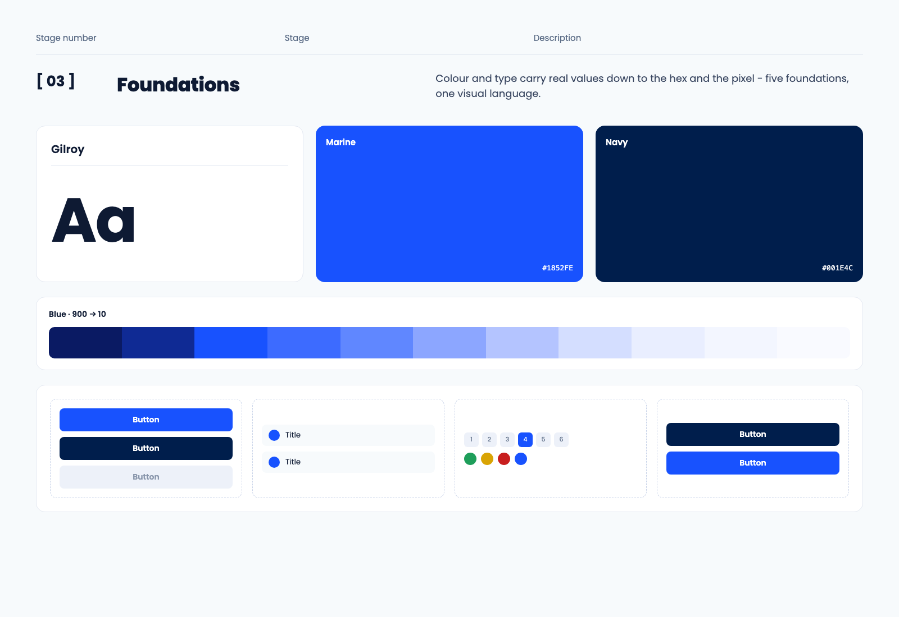
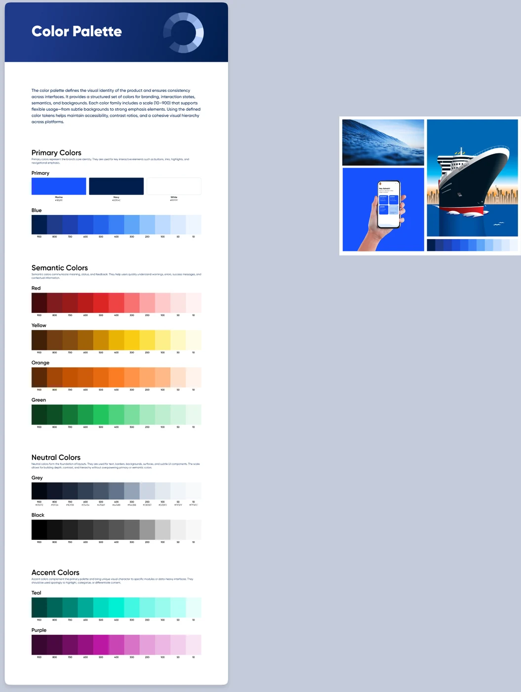
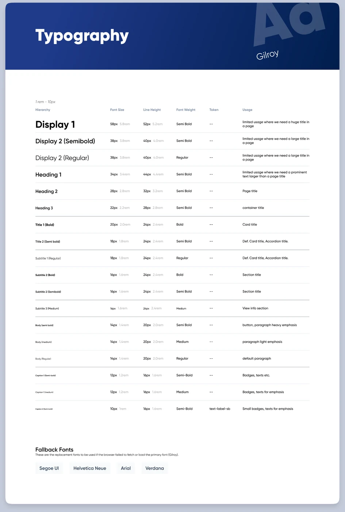
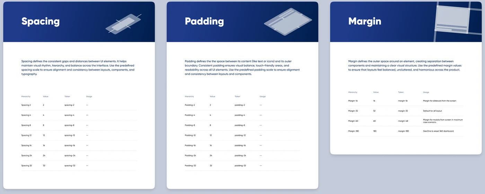
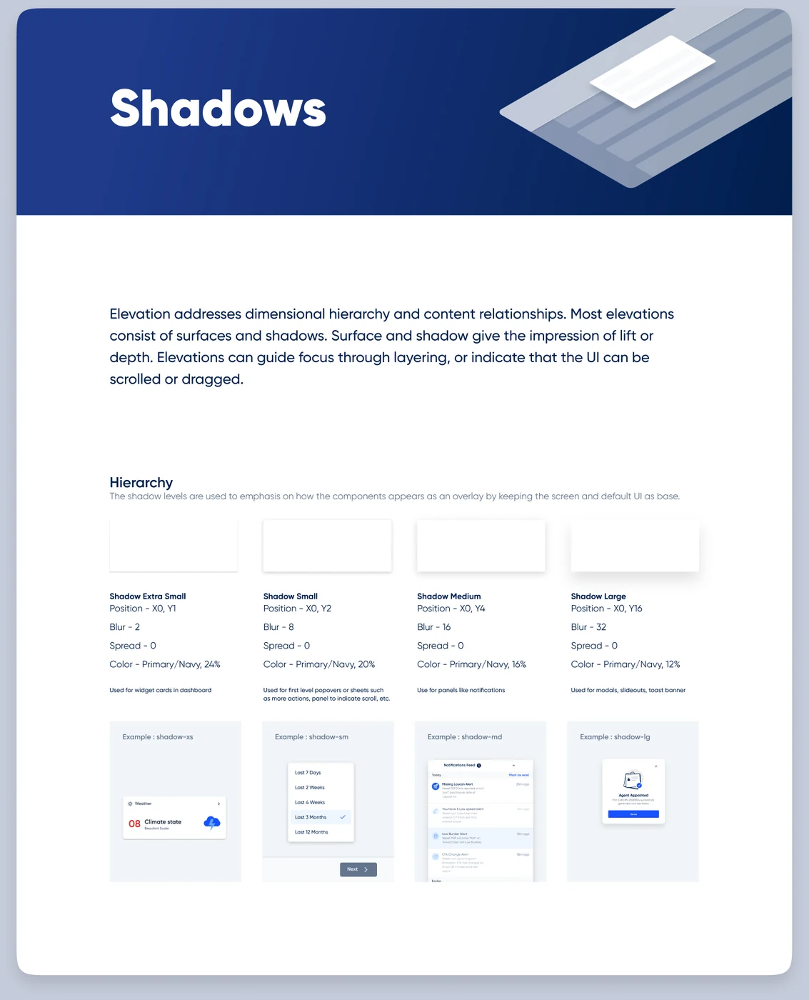
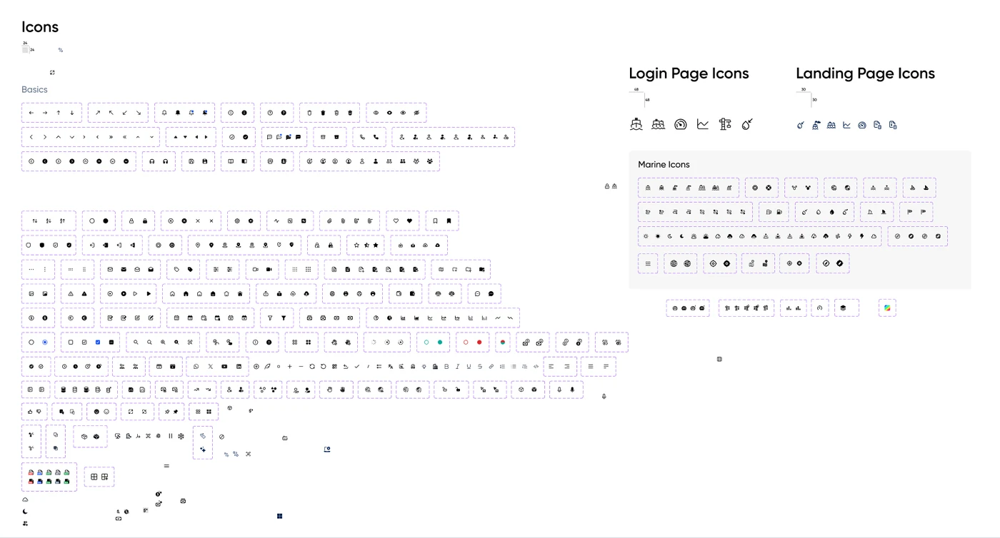
Colour. Colour splits into four jobs. Primary (Marine blue, Navy, White) carries the brand and every key interactive element. Semantic (Red, Yellow, Orange, Green) communicates meaning and feedback. Neutral (Grey, Black) is the foundation of layout - text, borders, backgrounds. Accent (Teal, Purple) exists to differentiate specific modules and is meant to be used sparingly. Every ramp scales the same way, 900 down to 10, so a designer reaches for "Red 700" the same way regardless of which family they're in.
Typography. The scale runs Display → Heading → Title → Subtitle → Body → Caption, 18 named styles across 11 pixel sizes (10-58px) and 4 weights. It's built on Gilroy with a documented fallback stack, and the page states its own base unit plainly: 1rem = 10px, not the usual 16px - worth knowing before you implement against it.
Spacing, shadow & icons. Spacing and padding share one 4px-based scale, 2 to 32px in 7 steps. Margin breaks from that pattern on purpose - it's context-specific, not incremental: 16px for slide-outs, 32px as the layout default, 60px for modals at their maximum case, 180px for the GeoOne and vessel 360 dashboards specifically. Shadow is even smaller: 4 elevation levels, one colour source (Navy), where only opacity and blur scale - xs for dashboard cards up to lg for modals and toasts.
Icons split in two: a general 24px UI set with both line and filled variants for roughly 90 icons, and a bespoke Marine set - ships, ports, anchors, bunkers, weather - built specifically because a maritime product needed iconography a generic library doesn't carry.
How it's wired. The intent is a normal three-layer system: a raw scale (900→10 on colour, 2-32px on spacing), a named token on top of it (spacing-16, padding-24, shadow-xs, margin-32), and a component that consumes that token rather than a raw value. Shadow is where this works end to end - every elevation level names its token and states exactly which component uses it, down to "widget cards in dashboard" for shadow-xs and "modals, slideouts, toast banner" for shadow-lg.
Components
Twelve components, one anatomy each
Every component documents the same way: a definition, a structural anatomy, every state, and usage notes - so a new pattern can be added without reinventing how patterns get written down.
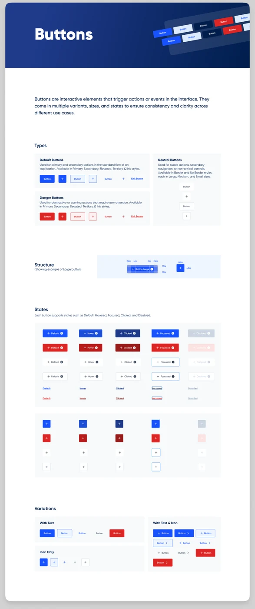
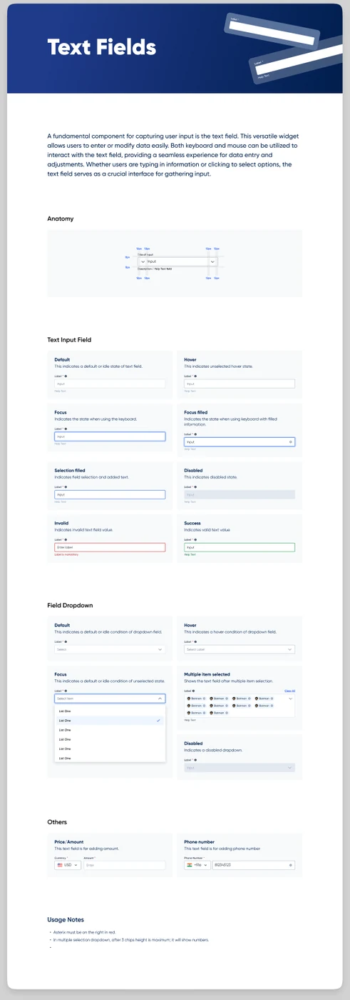
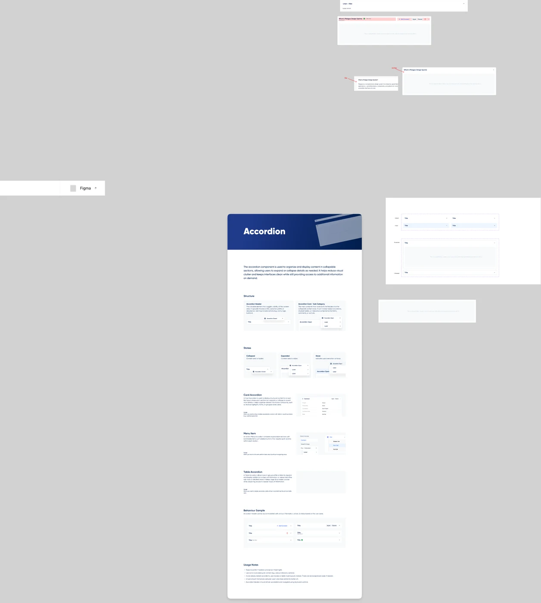
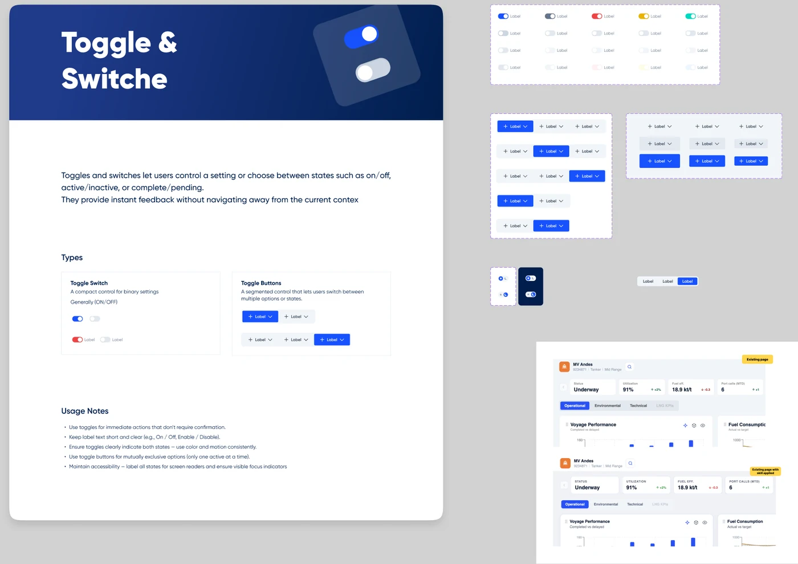
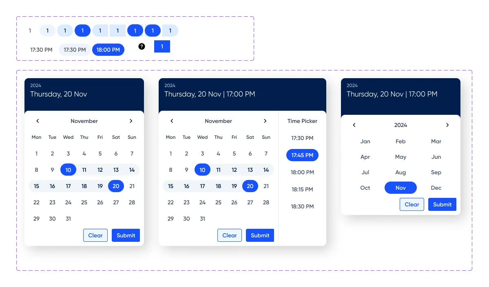
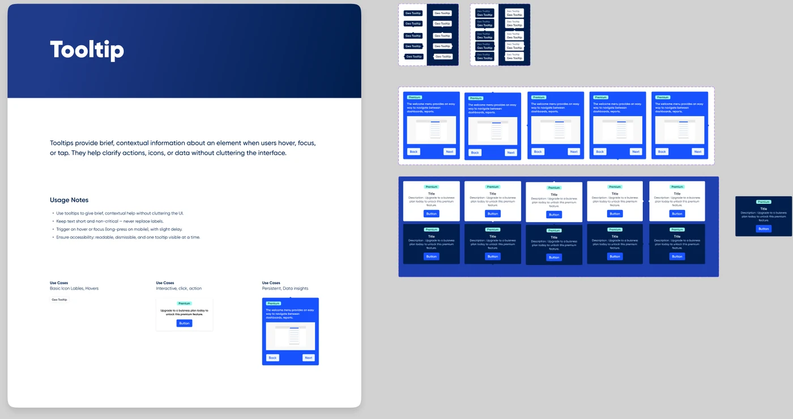
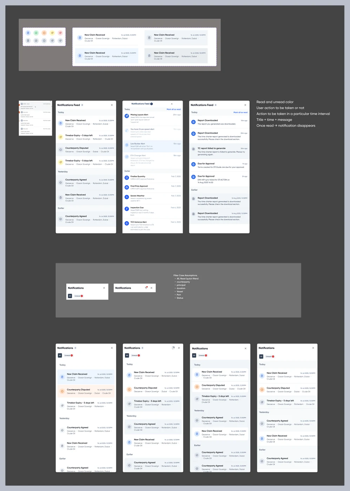
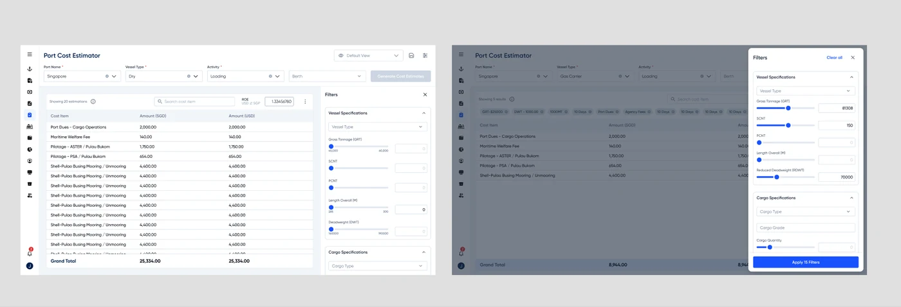
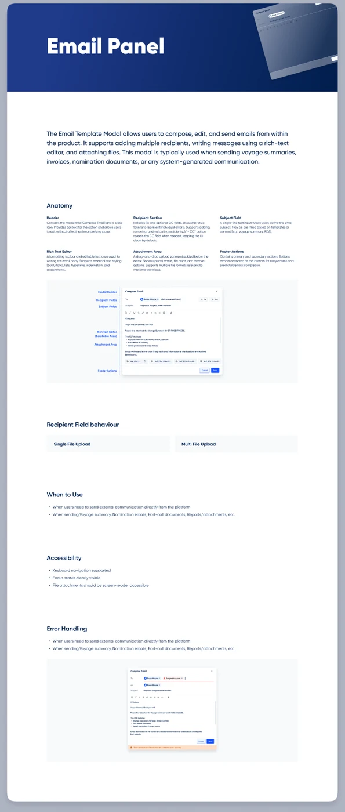
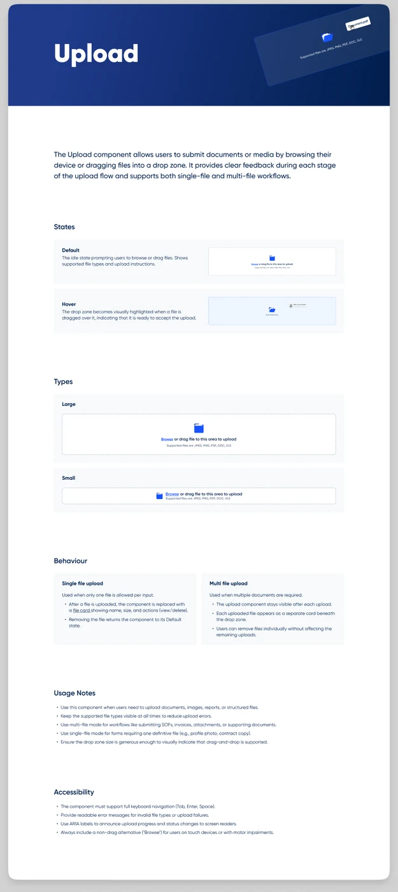
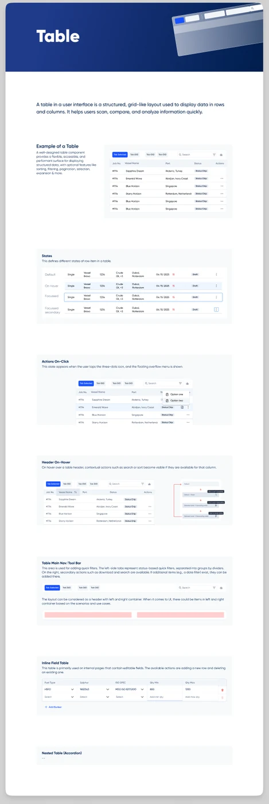
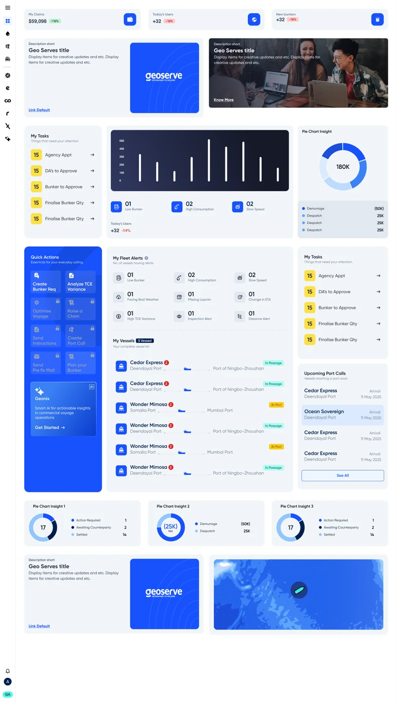
Documentation. The standard is consistent across all twelve: a plain-language definition of what the component is for, a structural anatomy diagram with real measurements (Buttons' Large variant, for instance, calls out 24px horizontal padding and a 48×48 icon-only footprint), a card for every state the component supports, and a short list of usage notes - what to do, and occasionally what not to.
What actually shipped
Where the system actually lands
The dashboard-components page isn't an abstract catalogue - it's assembled into a real Geoserve operations dashboard: KPI tiles, fleet alerts, a vessel list with live route progress, and a nautical map, all built from the same eleven widget types documented above. The toggle component tells the same story at smaller scale, shown landing directly in a live "MV Andes" vessel dashboard - the same screen, before and after the system's applied to it.
Reflection
What's still unfinished
Pelagos documents its own gaps as openly as its patterns. A few things are still incomplete:
Of all 18 typography styles, only Caption 2 Semi-bold ships with an actual token (text-label-sb) wired to it - everything else is a fully specified visual spec waiting to be connected.
Some of the original design-to-dev drift is still visible today: spacing and padding have named tokens with no usage documented against them, and one margin token is mislabelled (Margin-60 pointing to margin-48).
The same documentation standard that makes the system usable also makes the gaps easy to spot: Text field documents 8 states in full, while Upload only mocks up 2 of the states its own usage notes describe. Same standard, applied honestly - so the punch list writes itself.
Next project
Maritime SaaS · B2B